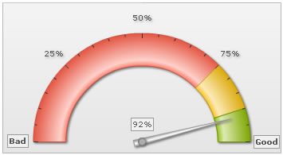

Angular Gauge > Using STYLEs |
||||||||||||||||||||||||||||||||||||||||||||||||||||
The angular gauge can effectively use STYLEs feature to apply animation, effects and font styling to each and every object on the chart. |
||||||||||||||||||||||||||||||||||||||||||||||||||||
| An example | ||||||||||||||||||||||||||||||||||||||||||||||||||||
| Shown below is a simple example where we've applied font style to limit and value texboxes and shadow style to tick values: | ||||||||||||||||||||||||||||||||||||||||||||||||||||
<chart lowerLimit='0' upperLimit='100' lowerLimitDisplay='Bad' upperLimitDisplay='Good' gaugeStartAngle='180' gaugeEndAngle='0' palette='1' numberSuffix='%' tickValueDistance='20' showValue='1'> |
||||||||||||||||||||||||||||||||||||||||||||||||||||
| This results in: | ||||||||||||||||||||||||||||||||||||||||||||||||||||
|  | ||||||||||||||||||||||||||||||||||||||||||||||||||||
| This was just a basic example. You can create complex animation patterns or apply effects to all chart objects as per your wish. | ||||||||||||||||||||||||||||||||||||||||||||||||||||
| Chart Objects | ||||||||||||||||||||||||||||||||||||||||||||||||||||
| You can apply effects, font styles and animation to the following objects in angular gauge: | ||||||||||||||||||||||||||||||||||||||||||||||||||||
|